用 Skill 驅動 AI 做設計 — 在畫布上設計，落地為程式碼
Pencil（pencil.dev）是由 High Agency 公司開發的 AI 驅動設計工具。它的核心理念是：
Pencil 不是一個獨立的設計軟體，而是一個 IDE 擴充套件，直接嵌入到你的程式碼編輯器中運作。
| 比較項目 | 傳統流程（Figma → 開發） | Pencil 流程 |
|---|---|---|
| 設計環境 | 獨立設計軟體 | 直接在 IDE 中設計 |
| 交接方式 | 匯出圖片/規格給工程師 | 設計即程式碼，無需交接 |
| AI 整合 | 無 / 有限 | 透過 MCP 深度整合 AI |
| 版本控制 | 設計檔案難以 Git 管理 | .pen 是 JSON，原生支援 Git |
| 協作方式 | 設計師 → 工程師（序列） | 設計 + 開發同時進行（平行） |
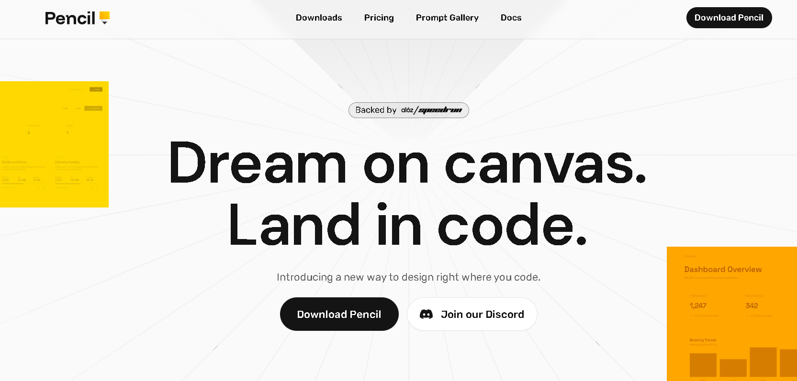
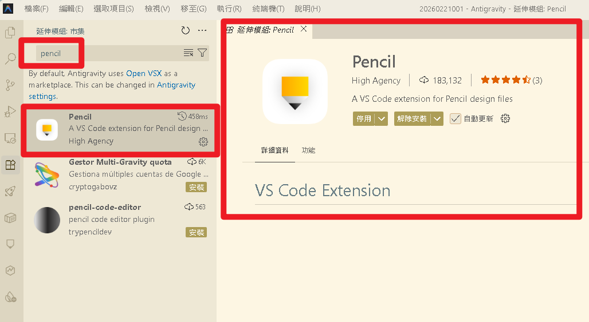
.pen 檔案（例如 test.pen）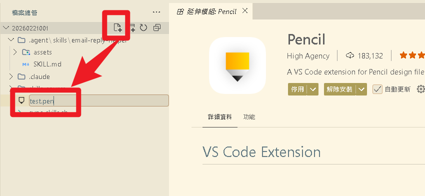
方法一：用 Antigravity 終端機
# 在專案根目錄建立 designs 資料夾
mkdir -p designs
# 建立一個空的 .pen 檔案
touch designs/my-first-design.pen方法二：用 Antigravity 檔案總管（更簡單）
my-first-design.pen.pen 檔案本質上是 JSON 格式，可以用 Git 做版本控制，這是 Pencil 最大的優勢之一。
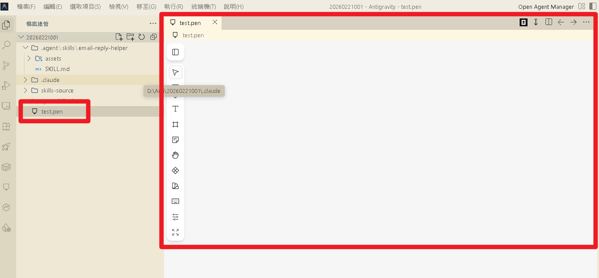
在 Antigravity 的 AI 聊天面板中輸入：
請確認你是否可以存取 Pencil 設計工具，列出可用的 Pencil MCP 工具如果 AI 回應中列出了 pencil 相關的工具（如 batch_design、batch_get、get_screenshot 等），就代表 MCP 連線成功。
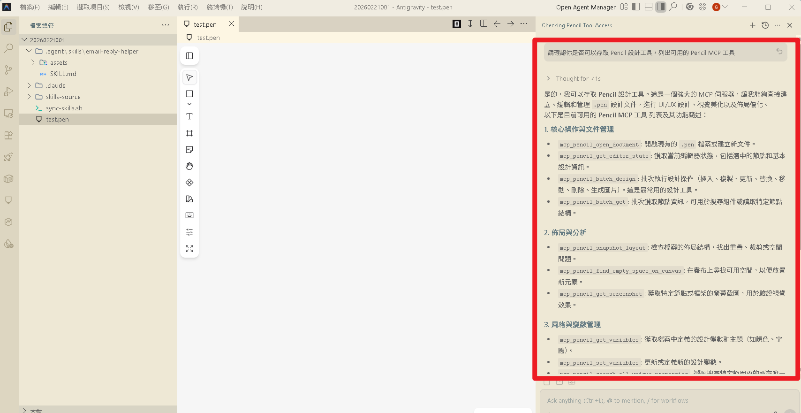
| 工具名稱 | 功能 | 用途 |
|---|---|---|
batch_design | 建立/修改/刪除設計元素 | 新增按鈕、調整版面、更換顏色 |
batch_get | 讀取設計結構 | 了解目前畫布上有什麼元素 |
get_screenshot | 截取設計預覽圖 | AI 自我驗證設計結果 |
snapshot_layout | 分析版面結構 | 檢查元素位置、找出重疊問題 |
get_editor_state | 取得編輯器狀態 | 知道目前選取了什麼 |
get_style_guide | 取得風格指南 | 用於設計靈感與一致性 |
find_empty_space_on_canvas | 尋找空白區域 | 找到放置新元素的位置 |
在 Antigravity 的 AI 聊天面板中，確保 .pen 檔案已開啟，然後輸入：
請在 my-first-design.pen 中設計一個現代風格的登入頁面，包含：
- 一個標題「歡迎回來」
- Email 和密碼輸入框
- 登入按鈕（藍色漸層）
- 「忘記密碼？」連結
- 底部的「還沒有帳號？立即註冊」文字AI 會透過 MCP 呼叫 batch_design 工具，在 Pencil 畫布上逐步建立這些元素。你可以在旁邊的畫布上即時看到結果！
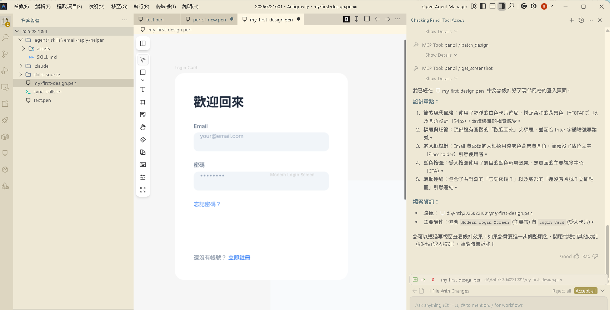
Pencil 最強大的功能之一，就是可以將設計直接轉換為生產等級的程式碼。
在 Antigravity 的 AI 聊天面板中輸入：
請將目前的登入頁面設計轉換為 HTML + Tailwind CSS 程式碼| 指令範例 | 輸出格式 |
|---|---|
轉換為 HTML + CSS | 原生 HTML/CSS |
轉換為 HTML + Tailwind CSS | Tailwind 樣式 |
轉換為 React 元件 | React JSX + CSS |
轉換為 React + Tailwind | React + Tailwind |
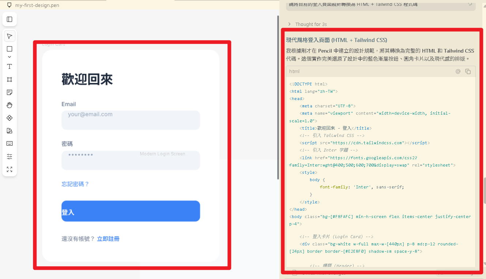
到目前為止，每次都要手動告訴 AI 用什麼風格、包含哪些元素、遵守什麼規範。如果把這些規則寫成 Skill，AI 每次設計時都會自動遵守！
mkdir -p skills-source/pencil-web-designer/assets建立 skills-source/pencil-web-designer/SKILL.md，核心內容結構：
---
name: pencil-web-designer
description: >
AI 網頁設計助手，使用 Pencil 工具在 .pen 畫布上設計網頁介面。
當使用者需要設計網頁、Landing Page、Dashboard、表單頁面時觸發。
---
# Pencil 網頁設計助手
## 前置檢查
- Check if Pencil MCP 工具可用
- Ask user 想要設計什麼類型的頁面
- Ask user 偏好的風格
## 執行步驟
- Step 1：了解需求（MUST 確認後才開始）
- Step 2：建立設計（漸進式建構）
- Step 3：驗證設計（截圖 + 版面檢查）
- Step 4：產出程式碼（如需要）
## 安全規則
- NEVER 修改未要求修改的現有設計
- MUST 每次重大變更前先確認
## 設計規範
- MUST 使用 8px 間距系統
- MUST 確保 WCAG AA 對比度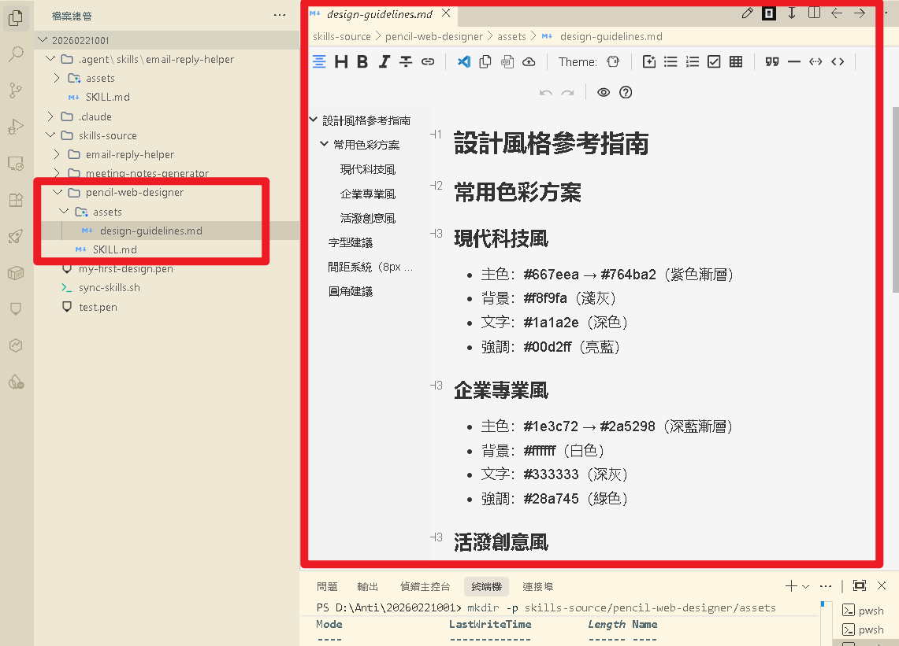
在 assets/ 中建立 design-guidelines.md，定義三種色彩方案、字型建議、間距系統：
主色：#667eea → #764ba2（紫色漸層）
背景：#f8f9fa 強調：#00d2ff
主色：#1e3c72 → #2a5298（深藍漸層）
背景：#ffffff 強調：#28a745
主色：#f093fb → #f5576c（粉紫漸層）
背景：#fafafa 強調：#fdcb6e
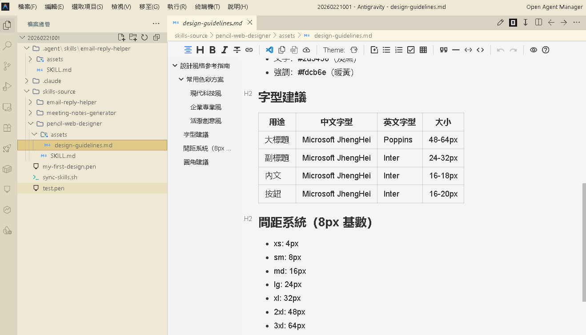
bash sync-skills.sh然後執行 tree skills-source /F 確認三個 Skill 都在：
skills-source/
├── email-reply-helper/ ← Skill 1
│ ├── SKILL.md
│ └── assets/
├── meeting-notes-generator/ ← Skill 2
│ ├── SKILL.md
│ └── assets/
└── pencil-web-designer/ ← Skill 3（新增！）
├── SKILL.md
└── assets/
└── design-guidelines.md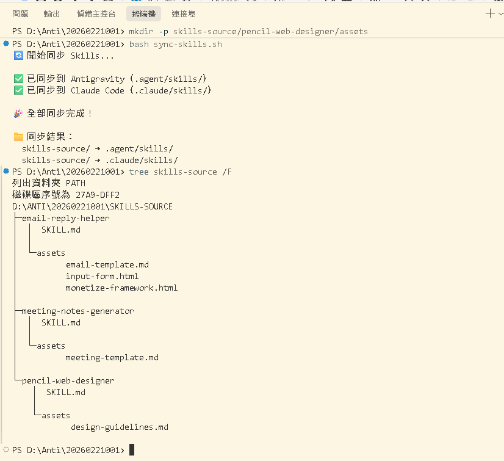
.pen 檔案（畫布上可以看到無限畫布）pencil-web-designer Skill 已同步到 .agent/skills/請用 pencil-web-designer 幫我設計一個 AI 課程的 Landing Page，
風格要現代簡約，主色用紫色漸層，
需要包含：導覽列、Hero 區塊、三個課程特色卡片、報名 CTA 按鈕| 順序 | AI 應該做的事 | 對應 Skill 中的哪條規則 |
|---|---|---|
| 1 | 自動偵測並載入 Skill | Skill 的 description 觸發條件 |
| 2 | 先跟你確認需求 | Ask user 規則 |
| 3 | 在 Pencil 畫布上建立設計 | batch_design MCP 工具 |
| 4 | 遵守設計規範（8px 間距） | MUST 使用一致的間距系統 |
| 5 | 詢問是否需要轉碼 | Ask user 想要的程式碼格式 |
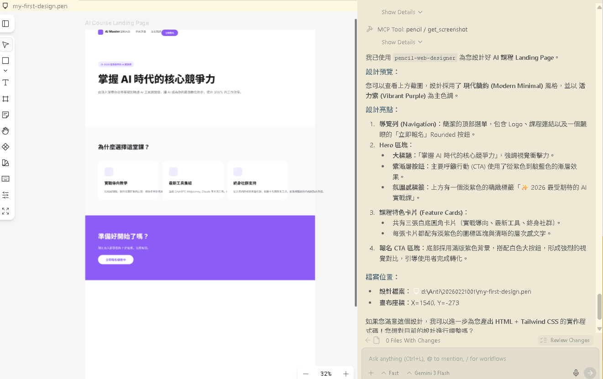
| # | 重點 | 一句話記憶 |
|---|---|---|
| 1 | Pencil = IDE 內的設計工具 | 不用開 Figma，在 Antigravity 裡就能設計 |
| 2 | MCP 是橋梁 | AI 透過 MCP 協定操作 Pencil 畫布 |
| 3 | .pen 是 JSON | 設計檔案可以用 Git 版本控制 |
| 4 | Skill 讓設計更一致 | 把設計規範寫成 Skill，AI 自動遵守 |
| 5 | 設計即程式碼 | 設計完成 → 一鍵轉換 HTML/CSS/React |
skills-source/
├── email-reply-helper/ ← Skill 1：Email 回覆助手
│ ├── SKILL.md
│ └── assets/
│ ├── email-template.md
│ ├── input-form.html
│ └── monetize-framework.html
├── meeting-notes-generator/ ← Skill 2：會議紀錄產生器
│ ├── SKILL.md
│ └── assets/
│ └── meeting-template.md
└── pencil-web-designer/ ← Skill 3：Pencil 網頁設計助手
├── SKILL.md
└── assets/
└── design-guidelines.md曾慶良（阿亮老師）
🏆 前往 Day 1 測驗認證© 2026 阿亮老師 版權所有 | Made with ❤️ by 曾慶良(阿亮老師) × Claude Code